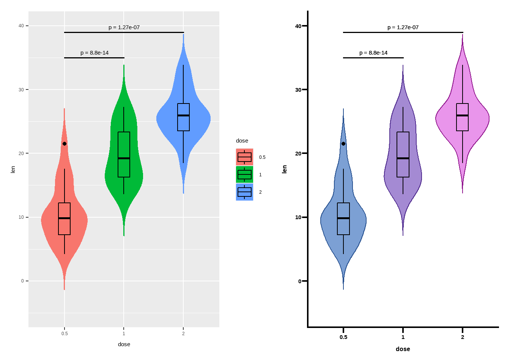

先决条件
Show the code
names(ggprism_data$themes) [1] "autumn_leaves" "beer_and_ales" "black_and_white" "candy_bright"
[5] "candy_soft" "colorblind_safe" "colors" "diazo"
[9] "earth_tones" "evergreen" "greenwash" "muted_rainbow"
[13] "office" "purple_passion" "shades_of_gray" "summer"
[17] "the_blues" "winter_soft" "stained_glass" "warm_pastels"
[21] "flames" "floral" "inferno" "magma"
[25] "mustard_field" "neon" "pastels" "pearl"
[29] "plasma" "prism_dark" "prism_light" "quiet"
[33] "spring" "starry" "viridis" "waves"
[37] "blueprint" "fir" "ocean" "sunny_garden"
[41] "wool_muffler" "warm_and_sunny" "winter_bright" "all_null" Show the code
preview_theme("colors")
Show the code
lengths(ggprism_data$colour_palettes) autumn_leaves beer_and_ales black_and_white blueprint blueprint2
9 9 9 9 9
blueprint3 candy_bright candy_soft colorblind_safe colors
9 9 9 6 20
diazo earth_tones evergreen fir fir2
9 10 9 9 9
fir3 flames flames2 floral floral2
9 9 9 12 12
greenwash inferno magma mustard_field mustard_field2
10 6 6 9 9
muted_rainbow neon ocean ocean2 ocean3
10 9 9 9 9
office pastels pearl pearl2 plasma
9 9 6 6 6
prism_dark prism_dark2 prism_light prism_light2 purple_passion
10 10 10 10 9
quiet quiet2 shades_of_gray spring spring2
9 9 9 9 9
stained_glass stained_glass2 starry starry2 summer
9 9 5 5 10
sunny_garden sunny_garden2 sunny_garden3 the_blues viridis
9 9 9 9 6
warm_and_sunny warm_pastels warm_pastels2 waves waves2
9 9 9 5 5
winter_bright winter_soft wool_muffler wool_muffler2 wool_muffler3
9 9 9 9 9 ggprism
散点图
Show the code
p1 <- ggplot(msleep[complete.cases(msleep), ],
aes(x = sleep_rem, y = sleep_total)) +
geom_point(aes(shape = factor(vore)), size = 3) +
theme_prism() +
theme(axis.title.y = element_blank())
p2 <- p1 + scale_shape_prism()
p1 + p2
柱状图
Show the code
p1 <- ggplot(ToothGrowth, aes(x = dose, y = len)) +
stat_summary(aes(fill = dose),
geom = "col", fun = mean, colour = "black", linewidth = 0.9) +
scale_y_continuous(limits = c(0, 30), expand = c(0, 0))
p2 <- p1 + theme_prism(base_size = 14)
p1 + p2箱线图
Show the code
p <- ggplot(ToothGrowth, aes(x = supp, y = len)) +
geom_boxplot(aes(colour = supp, fill = supp)) +
theme_prism(base_size = 12)
p1 <- p + scale_colour_prism(palette = "floral") +
scale_fill_prism(palette = "floral")
p2 <- p + scale_colour_prism(palette = "flames") +
scale_fill_prism(palette = "flames")
p1 + p2小提琴图
Show the code
p_vals <- tibble::tribble(
~group1, ~group2, ~p.adj, ~y.position,
"0.5", "1", 8.80e-14, 35,
"0.5", "2", 1.27e-7, 39
)
p1 <- ggplot(ToothGrowth, aes(x = dose, y = len)) +
geom_violin(aes(colour = dose, fill = dose), trim = FALSE) +
geom_boxplot(aes(fill = dose), width = 0.2, colour = "black") +
scale_y_continuous(limits = c(-5, 40))+
add_pvalue(p_vals, label = "p = {p.adj}", tip.length = 0, label.size = 4)
p2 <- p1 +
scale_color_prism("floral") +
scale_fill_prism("floral") +
theme_prism(base_size = 12) +
theme(legend.position = "none") +
add_pvalue(p_vals, label = "p = {p.adj}", tip.length = 0, label.size = 4)
p1+p2
轴
Show the code
p <- ggplot(ToothGrowth, aes(x = dose, y = len)) +
geom_jitter(aes(shape = dose), width = 0.2, size = 2) +
scale_shape_prism() +
theme_prism() +
theme(legend.position = "none")
p1 <- p + scale_y_continuous(limits = c(0, 40), guide = "prism_minor")
p2 <- p + scale_x_discrete(guide = "prism_bracket") +
scale_y_continuous(limits = c(0, 40))
p3 <- p + scale_y_continuous(limits = c(0, 40), guide = "prism_offset")
p4 <- p + scale_y_continuous(limits = c(0, 40), guide = "prism_offset_minor")
(p1 + p2) / (p3 + p4)
不连续轴
Show the code
# multiply one of the len values by 100
tg <- ToothGrowth
tg[2, "len"] <- tg[2, "len"] * 100
ggplot(tg, aes(x = dose, y = len)) +
geom_jitter(aes(shape = dose), width = 0.2, size = 2) +
scale_shape_prism() +
theme_prism() +
theme(legend.position = "none")
Show the code
p_bottom <- ggplot(tg, aes(x = dose, y = len)) +
geom_jitter(aes(shape = dose), width = 0.2, size = 2) +
scale_shape_prism() +
coord_cartesian(ylim = c(0, 60)) +
guides(x = "prism_bracket", y = "prism_offset_minor") +
theme_prism() +
theme(legend.position = "none")
p_bottom
Show the code
p_top <- ggplot(tg, aes(x = dose, y = len)) +
geom_jitter(aes(shape = dose), width = 0.2, size = 2) +
scale_shape_prism() +
coord_cartesian(ylim = c(1140, 1160)) +
scale_y_continuous(breaks = c(1140, 1160)) +
guides(y = "prism_offset_minor")
theme_outlier <- function(palette = "black_and_white",
base_size = 14,
base_family = "sans",
base_fontface = "bold",
base_line_size = base_size/14,
base_rect_size = base_size/14,
axis_text_angle = 0,
border = FALSE) {
theme_prism(palette = palette,
base_size = base_size,
base_family = base_family,
base_fontface = base_fontface,
base_line_size = base_line_size,
base_rect_size = base_rect_size,
axis_text_angle = axis_text_angle,
border = border) %+replace%
theme(axis.title = element_blank(),
axis.text.x = element_blank(),
axis.ticks.x = element_blank(),
axis.line.x = element_blank(),
legend.position = "none")
}
p_top <- p_top + theme_outlier()
p_top
Show the code
p_top / p_bottom +
plot_layout(heights = c(1, 4)) &
theme(axis.text.y = element_text(colour = "red"))
p值
Show the code
# create a jitter plot of the sleep data set
# and indicate the means
p <- ggplot(sleep, aes(x = group, y = extra)) +
geom_jitter(aes(shape = group), width = 0.1) +
stat_summary(geom = "crossbar", fun = mean, colour = "red", width = 0.2) +
theme_prism() +
theme(legend.position = "none")
p
Show the code
[1] 0.0794Show the code
df_p_val <- data.frame(
group1 = "1",
group2 = "2",
label = result,
y.position = 6
)Show the code
colnames(df_p_val) <- c("apple", "banana", "some_label", "some_y_position")
# add p-value brackets again
p + add_pvalue(df_p_val,
xmin = "apple",
xmax = "banana",
label = "some_label",
y.position = "some_y_position")
Show the code
colnames(df_p_val) <- c("group1", "group2", "label", "y.position")
# change bracket and label aesthetics
p1 <- p + add_pvalue(df_p_val,
colour = "red", # label
label.size = 8, # label
fontface = "bold", # label
fontfamily = "serif", # label
angle = 45, # label
hjust = 1, # label
vjust = 2, # label
bracket.colour = "blue", # bracket
bracket.size = 1, # bracket
linetype = "dashed", # bracket
lineend = "round") # bracket
# use glue expression for label
p2 <- p + add_pvalue(df_p_val, label = "p = {label}")
# make bracket tips longer and use coord_flip
p3 <- p + add_pvalue(df_p_val, tip.length = 0.15, coord.flip = TRUE) +
coord_flip()
# change bracket tips independently
# (make one side disappear and the other longer)
p4 <- p + add_pvalue(df_p_val, tip.length = c(0.2, 0))
(p1 + p2) / (p3 + p4)
+ rstatix
Show the code
p <- ggplot(ToothGrowth, aes(x = dose, y = len)) +
geom_boxplot(aes(fill = dose), colour = "black") +
theme_prism() +
theme(legend.position = "none")
df_p_val <- rstatix::t_test(ToothGrowth, len ~ dose, ref.group = "0.5") %>%
rstatix::add_xy_position()
p + add_pvalue(df_p_val,
label = "p = {p.adj}",
remove.bracket = TRUE)